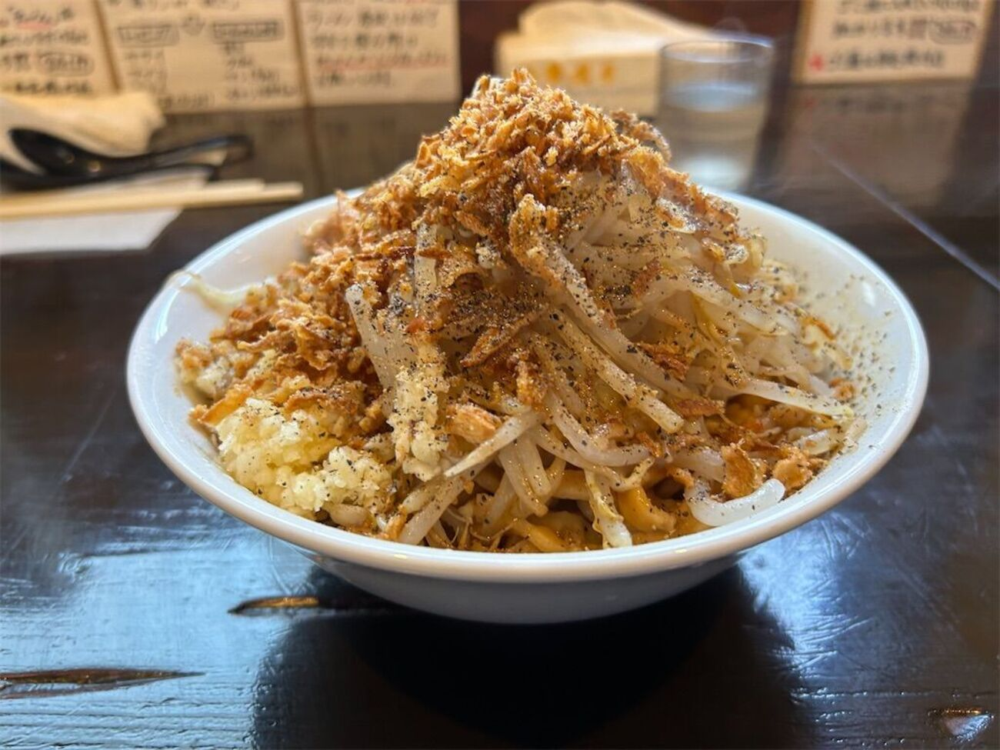
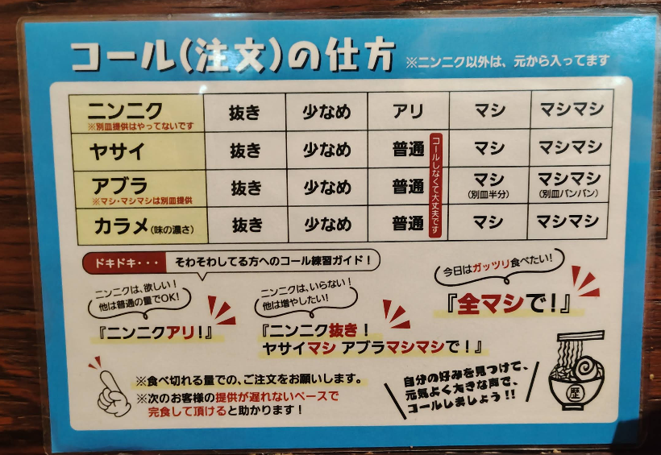

「歴史を刻め」は、ボリューム満点の二郎系ラーメンが楽しめる人気ラーメン店です。
極太麺と濃厚な豚骨醤油スープ、厚切りのチャーシューが特徴で、食べ応え抜群の一杯を味わえます。
麺の量や野菜、ニンニク、背脂などを好みに合わせて調整できるため、自分だけの一杯を楽しめるのも魅力です。
力強い味わいと圧倒的なボリュームで、多くのラーメンファンから支持を集めています。
ガッツリ食べたい方や、二郎系ラーメンを満喫したい方におすすめのお店です。

🗣️ コール（無料トッピング）の頼み方
ラーメン提供の直前に、スタッフから「ニンニク入れますか？」と聞かれます。これがコールの合図です！
自分好みの最強の一杯を作り上げるための注文方法をマスターしましょう！
🔰 まずは基本ルール！
「ニンニク」以外は、元から入っています。
ヤサイ・アブラ・カラメの量が「普通」でいい場合は、コールしなくて大丈夫です。
🍜 選べる4つのトッピング
以下の4種類から、増減をお好みで調整できます。
- ニンニク （※別皿提供はやっていません）
- ヤサイ
- アブラ （※マシ・マシマシは別皿で提供します）
- カラメ （味の濃さ）
📏 量の指定方法
それぞれのトッピングに対して、以下の段階で量を指定します。
- 抜き（なし）
- 少なめ
- 普通（※ニンニクを入れる場合は「アリ」）
- マシ（多め / ※アブラの場合は別皿半分）
- マシマシ（さらに多め！ / ※アブラの場合は別皿パンパン）
💬 ドキドキ…そわそわしてる方へ！コール練習ガイド
パターン①：ニンニクは欲しい！他は普通の量でOK！
👉 『ニンニクアリ！』
パターン②：ニンニクはいらない！他は増やしたい！
👉 『ニンニク抜き！ヤサイマシ アブラマシマシで！』
パターン③：今日はガッツリ限界まで食べたい！
👉 『全マシで！』
⚠️ ご注文の際のお願い
必ず「食べ切れる量」でのご注文をお願いします。
次のお客様の提供が遅れないペースで完食していただけると大変助かります！
自分の好みを見つけて、元気よく大きな声でコールしましょう！！